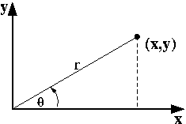
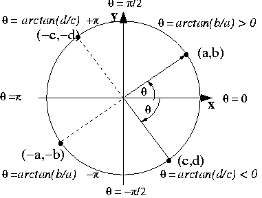
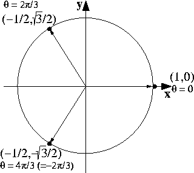
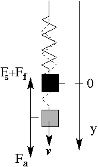
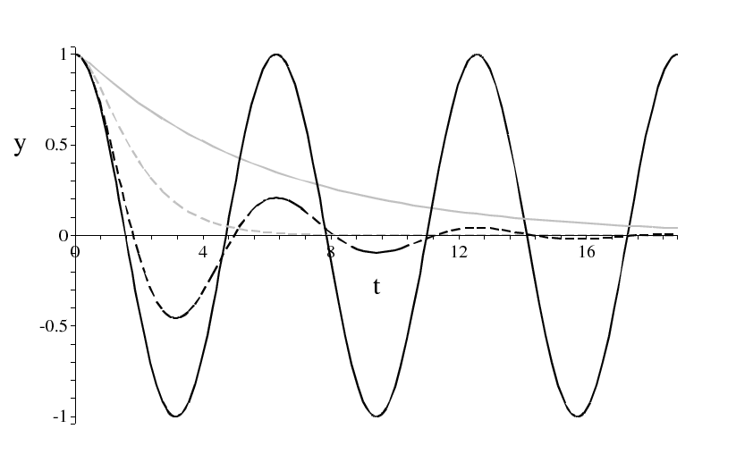

1 Complex numbers
1.1 History of the number system
Starting from the natural numbers \mathbb{N} =1,2,3,.... (< 1500 BC) our number system has been extended several times. By the number ``0'' (\sim 700 BC) and the negative integers -1,-2,-3 ... (\sim 1600 AD) to form the set of integers \mathbb{Z}. Then the fractions \frac{1}{3}, \frac{-3}{7}, .. (\sim 1000 BC) lead to the rational numbers \mathbb{Q} and eventually eventually the invention of irrational numbers: \sqrt{2}, \pi, -\sqrt{3}, .... (\sim 500 BC) yield the real numbers \mathbb{R}. In the following we will extend the system once more by the “imaginary numbers” to form the set of complex numbers \mathbb{C}.
\mathbb{N} \subset \mathbb{Z} \subset \mathbb{Q} \subset \mathbb{R}\subset \mathbb{C}
New sets of numbers were introduced as solutions of operations, which previously had no solutions. E.g., “subtraction” operating on the positive integers required the introduction of negative numbers. Only over \mathbb{Z} but not over \mathbb{N} the subtraction of any two elements leads again to an element of the number set. Similar the”division” requires the introduction of rationals and “taking a square root” the introduction of irrational numbers.
The extension of the rationals by the irrational numbers to the real numbers (\mathbb{R}), however, does not completely solve the problem of taking roots. The equation x^{2} = -2 , still has no solution within the real numbers.
In the 16th century Gerolamo Cardano (Appendix [Cardano])was the first who noted that you can formally solve such equations by introducing a number \sqrt{-1} together with a rule \sqrt{-1}\sqrt{-1} = -1. The subject was further developed by Leonard Euler (18th century) and later by Casper Wessel, Jean Robert Argand, Carl Friederich Gauß, Sir William R. Hamilton. The 19th century showed a more rigourous development of the theory by Augustin Cauchy, Peter Dirichlet , Karl Weierstrass and Georg Friederich B. Riemann.
1.2 Definition
We denote the square root of -1 by i, the imaginary unit 1: i:= \sqrt{-1} ; \quad i^{2} = -1 If x and y are real numbers then z := x + i y , is called a complex number. x is the real part, x := {\rm Re}(z), and y:= {\rm Im}(z) is the imaginary part of the complex number z. \mathbb{C} is the symbol for the complex numbers (z \in \mathbb{C}). Two complex numbers are equal z_{1} =z_{2} if and only if their real and imaginary parts are equal (x_{1}=x_{2} and y_{1} =y_{2}).
The modulus of a complex number is defined as |z| =\sqrt{x^{2}+y^{2}} \in \mathbb{R}^{+}.
The complex conjugate of a complex number z=x+i y is defined as \bar z = x - i y.
$$
Note that these rules reduce to the corresponding rules for real numbers if z=x+i 0. In particular ([zmult]) implies the rule for multiplication of a complex number with a scalar (e.g. y_{1}=0,x_{1}=a): az_{2}= ax_{2} +iay_{2}.
1.2.0.1 Examples
(2+ 3 i) + (4- i) = (2+4) + (3 - i) = 6 + 2 i (2+3 i)(4- i) = 8 +12 i - 2 i - 3 i^{2}= 8+10 i + 3= 11 + 10 i
1.3 Properties
Addition and multiplication of complex numbers are \begin{aligned} &&\mbox{associative:} \quad z_{1}+ (z_{2}+z_{3}) = (z_{1}+z_{2})+ z_{2} , \quad z_{1}(z_{2}z_{3}) = (z_{1}z_{2})z_{2} , \\ &&\mbox{commutative:} \quad z_{1}+z_{2} = z_{2}+ z_{1} ,\quad z_{1}z_{2} = z_{2} z_{1} , \\ &&\mbox {distributive:} \quad z_{1}(z_{2}+z_{3}) = z_{1}z_{2} +z_{1}z_{3} \ . \end{aligned} Also for every complex number z there exists an unique inverse for addition (z+(-z)=0) and multiplication: z z^{-1} = 1 \quad \Leftrightarrow \quad z^{-1} = \frac{1}{z} = \frac{\bar z}{|z|^{2}} \ .
Proof. Proof. \begin{aligned} z_{1}z_{2}&=&1 \Leftrightarrow \quad x_{1}x_{2} - y_{1}y_{2} = 1 \quad \land \quad x_{1}y_{2} + x_{2}y_{1} =0 \\ & & \phantom{1} \Leftrightarrow \quad x_{2} =\frac{x_{1}}{x_{1}^{2}+y_{1}^{2}} \quad \land \quad y_{2}= \frac{-y_{1}}{x_{1}^{2}+y_{1}^{2}} \end{aligned} ◻
and a neutral element for the addition, z+0=z, as well as for the multiplication, 1 z = z. Hence, \mathbb{C} is a field.
The definition of \bar z and |z| implies the following relations \begin{aligned} z{\bar z} & = & |z|^{2} \label{zzbar} \\ z+ {\bar z} & = & 2 \ \rm{Re}(z) \\ z- {\bar z} & = & 2\ i \ \rm{Im}(z) \\ \overline{\bar z} & = & z \\ \overline{z_{1} + z_{2}} & = & \bar z_{1} + \bar z_{2} \\ \overline{z_{1} z_{2}} & = & \bar z_{1} \bar z_{2} \\ \overline{ \left( \frac{1}{z}\right)} &=& \frac{1}{\bar z} \\ |z_{1}||z_{2}| &=& |z_{1}z_{2}| \end{aligned}
It is easy to prove these relations, e.g. for the first we have:
Proof.
Proof: ([zzbar]). $$ \begin{aligned} z{\bar z} & = & (x+i y)(x-iy) \\ &=& x^{2} +i x y- i x y-i^{2} y^{2} \\ &=& x^{2} + y^{2} = |z|^{2} \end{aligned}$$ ◻
Notice however that the ordering we have for real number, i.e. for any two real numbers x,y we either x<y, x>y or x=y, does not hold for complex numbers. The ordering exists only for the modulus |z|. Instead we have the following inequalities:
\begin{aligned} |{\rm Re}(z)| & \le & |z| \\ |{\rm Im}(z)| & \le & |z| \\ | z_{1} +z_{2}| & \le& |z_{1}| +|z_{2}| \end{aligned} The last relation is the triangle inequality for complex numbers.
Proof. Proof (Triangle equation). Both sides of the equation are real and positive, so it is equivalent to consider the squared equation. Using |z|^{2} = z\bar z we get: \begin{aligned} & & z_{1}\bar z_{1} + z_{2} \bar z_{2} +\bar z_{1} z_{2} + z_{1} \bar z_{2} \le z_{1}\bar z_{1} + 2 |z_{1} z_{2}| + z_{2} \bar z_{2} \\ &\Leftrightarrow &- \bar z_{1} z_{2} + z_{1} \bar z_{2} \le 2 |z_{1} z_{2}| \\ &\Leftrightarrow& w + \bar w \le 2 |w| \quad \mbox{for} \ w:= \bar z_{1} z_{2} \\ &\Leftrightarrow & 2 {\rm Re}(w) \le 2 \sqrt{({\rm Re}(w))^{2}+({\rm Im}(w))^{2}} \end{aligned} ◻
1.4 The complex plane
We can think of the complex numbers as elements of the vector space \mathbb{R}^{2}, that is, we identify z=x + i y with the point (x,y)\in \mathbb{R}^{2}. Addition of elements in \mathbb{C} is represented by the addition of vectors, but for the multiplication we need an additional rule. $$ \begin{aligned} z=x + i y &\longleftrightarrow& (x,y) \\ z_{1} +z_{2} &\longleftrightarrow& (x_{1}+x_{2},y_{1}+y_{2}) \\ z_{1} z_{2} &\longleftrightarrow& (x_{1}x_{2} - y_{1}y_{2}, x_{1}y_{2} + x_{2}y_{1}) \end{aligned}$$ The real vector space \mathbb{R}^{2} together with these rules is called the complex plane or the Argand plane (or diagram). The x-axis is called the real axis, the y-axis the imaginary axis.
 a)  b)
The modulus of a complex number corresponds to the length r = \sqrt{x^{2}+y^{2}} of the vector (x,y) and the angle \theta between the x-axis and the vector is called the argument of z (\theta = \arg(z)). The latter is not unique, since the angle has a periodicity of 2 \pi. In order to make it unique a certain interval for the angle has to be chosen. The most common choice is {\arg}(z)\in (-\pi, \pi] and is called the principle argument of the complex number z. It is sometimes denoted by {\rm Arg}(z) to distinguish it from the multiple valued argument \arg: \arg(z)= {\rm Arg}(z) + k 2 \pi , \quad k\in \mathbb{Z} Example: z= 1+i \quad \Rightarrow \quad {\rm Arg}(z)=\pi/4; \quad \arg(z) = \pi/4 + 2 k \pi , \quad k \in \mathbb{Z}
Note that the argument \theta is not just \arctan(y/x) as the \arctan has a range -\pi/2 < \theta < \pi/2. The relation between \arctan(y/x) and \theta={\rm Arg}(x+i y) is illustrated in Figure 1b) and given by {\rm Arg}(z) = \left\{ \begin{array}{ll} \arctan(y/x) & x\ge0 \\ \arctan(y/x) +\pi & x<0, y \ge 0 \\ \arctan(y/x) -\pi & x<0, y <0 \end{array} \right.
This leads us to the polar representation of a complex number: z = r \left (cos(\theta) + i \ sin(\theta)\right) ; \quad r = \sqrt{x^{2}+y^{2}}, \quad \theta = \arg(z)
This polar representation of complex numbers is particular useful for understanding the operation of multiplication, since \begin{aligned} |z_{1}z_{2}| & = & |z_{1}||z_{2}| , \label{stretch} \\ arg(z_{1}z_{2})&=& arg(z_{1}) +arg(z_{2}) \ (mod \ 2 \pi) , \label{argadd} \end{aligned} the result of a multiplication of vector 1 with vector 2 is turning vector 1 by an angle of arg(z_{2}) and stretching it by a factor of r_{2}=|z_{2}|. Of course, interchanging the two vectors yields the same result.
Proof. Proof of ([stretch],[argadd]). \begin{aligned} z_{1}z_{2}&=&r_{1} r_{2} \left(\cos(\theta_{1}) \cos(\theta_{2}) - \sin(\theta_{1})\sin(\theta_{2}) +i \left(\cos(\theta_{1}) \sin(\theta_{2}) + \sin(\theta_{1})\cos(\theta_{2}) \right)\right) \\ &=& r_{1} r_{2} \left(\cos(\theta_{1} + \theta_{2}) +i \sin(\theta_{1} + \theta_{2}) \right) \end{aligned} Here we used the addition theorems for trigonometric functions: \begin{aligned} \sin(\theta \pm \phi) & = & \sin(\theta)\cos(\phi) \pm \cos(\theta)\sin(\phi) \\ \cos(\theta \pm \phi) & = & \cos(\theta)\cos(\phi) \mp \sin(\theta)\sin(\phi) \end{aligned} ◻
Applying this rule to powers of z yields the
If z=r(\cos(\theta) + i \sin(\theta)) and n is a positive integer, then z^{n} = r^{n} (\cos(n \theta) + i \sin(n \theta)) \ .
Proof. Proof. The formula can be proved by induction. First we note that the formula is correct for the trivial case n=1. We then prove that whenever the formula is right for n then it is also right for n+1 (inductive step). \begin{aligned} z &= & r (\cos(\theta)+ i \sin(\theta)) \quad \mbox{(n=0, basis)}\\ z^{n} & = & r^{n} (\cos(n \theta) + i \sin(n \theta)) \quad \mbox{assumption (n) is correct}\\ z^{n+1} & = & z^{n} z \quad \mbox{(n) implies (n+1)} \\ |z^{n+1}| & = & |z^{n}z| = r^{n} r = r^{n+1} \quad \mbox{due to (\ref{stretch})} \\ \arg(z^{n+1}) &=& \arg{(z^{n}z)} = \arg{(z^{n})} +\arg{z} = n\theta + \theta \quad \mbox{due to (\ref{argadd})} \\ \Rightarrow z^{n+1} & = & r^{n+1} (\cos((n+1) \theta) + i \sin((n+1) \theta)) \end{aligned} ◻
1.4.0.1 Examples
\begin{aligned} z &=& 2 = 2(\cos(0) + i \sin(0)) \\ \Rightarrow z^{n} &=& 2^{n}(\cos(n\cdot0) + i \sin(n\cdot0)) \\ &=& 2^{n}(1 +i0) = 2^{n} \end{aligned} \begin{aligned} z &=& -2 = 2(\cos(\pi) + i \sin(\pi)) \\ \Rightarrow z^{n} &=& 2^{n}(\cos(n\pi) + i \sin(n\pi)) \\ &=& 2^{n}((-1)^{n} +i0) = (-2)^{n} \end{aligned}
\begin{aligned} z &=& i = 1 (\cos(\pi/2)+i\sin(\pi/2))\\ \Rightarrow z^{n} &=& 1^{n}(\cos(n\pi/2)+i\sin(n\pi/2)) \\ z^{2} &=&(-1+0i) =-1 \\ z^{3} &=& (0-i) = - i \end{aligned} Compare these results with direct calculations of i^{2}=-1, i^{3}=-i etc.
1.4.0.2 Remark 1:
De Moivre’s formula also holds for negative integers. The proof is analogous to the proof used above but instead of |z^{n}|=|z|^{n} we have to use |z^{-n}| = \left|\left(\frac{1}{z}\right)^{n}\right| = \left|\frac{1}{z}\right|^{n} = \left|\frac{\bar z}{|z|^{2}}\right|^{n} = \frac{|\bar z|^{n}}{|z|^{2n}} = \frac{| z|^{n}}{|z|^{2n}} =\frac{1}{|z|^{n}} and \arg(z^{-n}) = \arg\left((z^{-1})^{n}\right)= n \arg\left(z^{-1}\right)=n \arg\left(\frac{{\bar z}}{|z|^{2}}\right) = n \arg\left({\bar z}\right) = - n \arg\left({z}\right)
1.4.0.3 Remark 2:
De Moivre’s formula yields a number of trigonometric relations. They can be deduce by applying the formula to numbers with |z|=r=1 that is numbers on the unit circle in the complex plane. This yields (\cos(\theta) + i \sin{\theta})^{n} = \cos(n \theta) + i \sin{(n \theta)} This is a equation between complex numbers. It implies that the real parts as well as the imaginary parts on both sides of the equation are the same. That is we get \Re\left((\cos(\theta) + i \sin{\theta})^{n}\right) = \cos(n \theta) \quad \mbox{and} \quad \Im\left((\cos(\theta) + i \sin{\theta})^{n}\right) = \sin(n \theta) \ . For n=3 for instance we have \begin{aligned} (\cos(\theta) + i \sin{\theta})^{3} & = & \cos(\theta)^{3} + 3 \cos(\theta)^{2} i \sin(\theta) + 3 \cos(\theta) i^{2} \sin(\theta)^{2} + i^{3} \sin(\theta)^{3} \\ & = & \cos(\theta)^{3} - 3 \cos(\theta) \sin(\theta)^{2} + i \left(3 \cos(\theta)^{2} \sin(\theta) - \sin(\theta)^{3}\right) \\ & = & \cos(\theta)^{3} - 3 \cos(\theta) (1-\cos(\theta)^{2}) + i \left(3 (1-\sin(\theta)^{2}) \sin(\theta) - \sin(\theta)^{3}\right) \\ & = & 4\cos(\theta)^{3} - 3 \cos(\theta) + i \left(3 \sin(\theta) - 4 \sin(\theta)^{3}\right) \\ & \Rightarrow& 4 \cos(\theta)^{3} - 3 \cos(\theta) = \cos(3 \theta) \quad \mbox{and}\\ & & 3 \sin(\theta) - 4 \sin(\theta)^{3} =\sin(3 \theta) \ . \end{aligned} These are two equations which are often used to express \cos(3 \theta) and \sin(3 \theta) in terms of \cos(\theta) and \sin(\theta), respectively. Corresponding equations for other n can be derived in an analogous manner.
De Moivres formula can also be inverted to calculate the roots of a complex number, i.e. solving the equation z^{n}=w for z.
The solution for z^{n}=w, w=r(\cos(\theta) + i \sin(\theta))\neq0 and n a positive integer, is given by the n roots z= \sqrt[n]{r}\left(\cos\left(\frac{\theta+k 2\pi}{n}\right) + i \sin\left(\frac{\theta+k 2\pi}{n}\right)\right) \quad k=0 .. n-1 \ .
Proof. Proof. Substitution of the solution in De Moivre’s formula shows that for any k we indeed solve the equation z^{n}=w. We only have to prove that all these roots are indeed different and that there are no further roots. For simplicity we choose here as the range for the argument \theta, \theta \in [0,2\pi) (rather then \theta \in (-\pi,\pi]). Then 0<\frac{\theta+k 2\pi}{n}<\frac{(1+k) 2\pi}{n} \le 2 \pi \quad \mbox{for} \quad k=0..n-1. This shows that for each k we do not leave the chosen range of arguments, i.e. we get indeed n different roots. It is also easy to see that for k\ge n we only reproduce already existing roots. E.g. for 2n > k\ge n we can write k=n+l with l\in 0,1,.., n-1. This leads to k 2 \pi/n = l 2 \pi/n + 2 \pi which is the same as l 2 \pi/n and hence reproduces an existing root due to the 2 \pi periodicity of any angle. ◻
Note that for any real positive number w=z^{n} there is always at least one real root Arg(z)=0, due to \theta=0, k=0 in the above formula. Moreover if n is even there exists a second real root (k=n/2) leads to Arg(z)=\pi or z= -\sqrt[n]{r}. Geometrically the roots can be found in the complex plane by dividing a circle with radius \sqrt[n]{r} in n arcs of equal length, starting at an angle \theta/n.
1.4.0.4 Example
The three roots of 1 are given by \begin{aligned} z &=& \sqrt[3]{1}\left(\cos\left(\frac{0+k 2\pi}{3}\right) + i \sin\left(\frac{0+k 2\pi}{3}\right)\right) \quad k=0,1,2 \\ &=& \{1, -\frac{1}{2}+ i \frac{\sqrt{3}}{2}, -\frac{1}{2}- i \frac{\sqrt{3}}{2}\} \ . \end{aligned}

1.5 Roots of polynomials
Proposition [invdemoivre] shows that any equation of the form z^{n}+w=0, for a given w\in \mathbb{C}, w\neq0, n \in \mathbb{N} has exactly n roots over \mathbb{C}. This results extends to the roots of a general polynomial:
Every polynomial of degree n\ge1, P(z)= a_{n}z^{n} + a_{n-1}z^{n-1}+ ... + a_{0}, a_{i}\in \mathbb{C} has exactly n (not necessarily distinct) roots, i.e. solutions of P(z)=0.
Proof. Proof. The proof requires some higher analysis and is given e.g. in the “Complex Analysis” course in level 4. ◻
1.5.0.1 Remark 1
Note that the result does not hold over \mathbb{R}. E.g. x^{3}+2 x^{2}-x-2=0 has three real roots, \{-1,1, -2\}, but x^{3}+8=0 has only one, -2.
1.5.0.2 Remark 2
The Fundamental Theorem only states the existence of roots. It does not provide a method of finding roots. For a quadratic polynomial a z^{2} + b z + c =0 the well known formula z=1/(2 a) (-b\pm \sqrt{b^{2}-4ac}) provides all solutions. Similar though much more complicated formulae exist for cubic (degree three) as well as quartic (degree four) polynomials. For polynomials of degree five (quintic polynomials) as well as all higher polynomials no such formulae are known and indeed cannot exist as stated in the Abel-Ruffini Theorem (see Appendix [Abel-Ruffini]).
1.5.0.3 Remark 3
The significance of this Theorem is that it will not be necessary now to extend our number system further in any way in order to be able to solve polynomial equations.
An immediate consequence of the Fundamental Theorem is
Every polynomial of degree n\ge1, can be factorised with the help of its (not necessarily distinct) roots z_{1},z_{2},..,z_{n} as P(z)= a_{n}(z-z_{1})(z-z_{2})...(z-z_{n}).
Proof. Proof. For a polynomial of degree n with a root z_{0} we can write P(z)=(z-z_{0}) Q(z) with Q(z) having a degree n-1. This is the result of the Factor Theorem (Appendix [Factor-Theorem]). Due to the Fundamental Theorem the polynomial Q(z) has again at least one root if n-1\ge1 and we can repeat the procedure until Q(z) has degree 0 and hence has to be equal to a_{n}. ◻
If we collect all identical roots we can write also P(z)= a_{n}(z-z_{1})^{\nu_{1}}(z-z_{2})^{\nu_{2}}...(z-z_{k})^{\nu_{k}}, where the \nu_{j}\in \mathbb{N} are the multiplicities of the now distinct roots z_{j}. Note that now k\le n but \sum_{j=1}^{k}\nu_{j} =n.
Consider the roots of P(z)= a_{n}z^{n} + a_{n-1}z^{n-1}+ ... + a_{0}=0 but now a_{i}\in \mathbb{R}. Then for any solution z_{0} \bar z_{0} is also a solution.
Proof. Proof. z_{0} is a root, i.e. P(z_{0})=0. Then \overline{P(z_{0})}=0, but \begin{aligned} \overline{P(z_{0})} &=&\overline{ a_{n}z^{n}_{0} + a_{n-1}z^{n-1}_{0}+ ... + a_{0}} \\ &=& \overline{ a_{n}z^{n}_{0}} + \overline{a_{n-1}z^{n-1}_{0}}+ ... +\overline{ a_{0}} \\ &=& {\bar a_{n}}{\bar z}^{n}_{0}+ {\bar a_{n-1}}{\bar z}^{n-1}_{0}+ ... +{\bar a_{0}} \\ &=& a_{n}{\bar z}^{n}_{0}+ a_{n-1}{\bar z}^{n-1}_{0}+ ... + a_{0} = P({\bar z_{0}}) \ . \end{aligned} ◻
This theorem often helps to find further roots of a polynomial once one root is known.
1.5.0.4 Example
Given that z_{0}=2+i is a root of the equation z^{3}-z^{2}-7z +15 = 0 we can solve the equation completely. The polynomial is real (it has real coefficients) and so {\bar z_{0}}=2-i is also a root. That is (z-z_{0})(z-{\bar z}_{0}) = z^{2} -4 z +5 has to be a factor of the polynomial. By polynomial division we find (z^{2} -4 z +5)(z+3)=z^{3}-z^{2}-7z +15 that is z_{0}=-3 is the third root.
1.6 The exponential function
The exponential function is often defined by its series expansion (converges for every x\in \mathbb{R}): \exp(x) = 1+ \frac{x}{1!} + \frac{x^{2}}{2!} + \frac{x^{3}}{3!} + \frac{x^{4}}{4!} + .. + \frac{x^{n}}{n!} +.. = \sum_{n=0}^{\infty} \frac{x^{n}}{n!} Similar we have series expansions (Taylor series) for \cos(x) and \sin(x): \cos(x) = 1- \frac{x^{2}}{2!} + \frac{x^{4}}{4!} - .. + (-1)^{n} \frac{x^{2n}}{2n!} +.. = \sum_{n=0}^{\infty} (-1)^{n} \frac{x^{2n}}{2n!} \sin(x) = \frac{x}{1!} - \frac{x^{3}}{3!} + \frac{x^{5}}{5!} + - .. + (-1)^{n} \frac{x^{2n+1}}{(2n+1)!} +.. = \sum_{n=0}^{\infty} (-1)^{n} \frac{x^{2n+1}}{(2n+1)!}
If we substitute these expressions in (\cos(\theta) + i \sin(\theta)) we find: \begin{aligned} \cos(\theta) + i \sin(\theta) & = & 1+ i \frac{\theta}{1!} - \frac{\theta^{2}}{2!} - i \frac{\theta^{3}}{3!} + \frac{\theta^{4}}{4!} + .. \\ & = & 1+ \frac{i \theta}{1!} + \frac{(i \theta)^{2}}{2!} + \frac{(i \theta)^{3}}{3!} + \frac{(i\theta)^{4}}{4!} + .. + \frac{(i \theta)^{n}}{n!} +.. = \exp(i\theta) \end{aligned} This suggest to extend the definition of the exponential function for imaginary arguments by \exp(i\theta) := \cos(\theta) + i \sin(\theta) or in general
\exp(z) = \exp(x+i y) = \exp(x)\exp(i y) = \exp(x)\left( \cos(y) + i \sin(y)\right)
Example: e^{-1+i \pi/3}= e^{-1}(\cos(\pi/3) +i \sin(\pi/3))= (1/(2e)+i\sqrt{3}/(2e))
In particular for z=i \pi we find Euler’s formular (Leonard Euler, Swiss mathematician, 1707-1783). The famous theoretical physicist Richard Feynman called it “the most remarkable formula in mathematics”, because it relates the important constants e, \pi, i and 1: e^{i \pi}= - 1
The exponential function has the following properties:
\exp(0) =1.
\exp(z_{1})\exp(z_{2})=\exp(z_{1}+z_{2}).
\frac{d}{dz} \exp (z) = \exp(z).
For all finite z, \exp(z) \neq 0 and \exp(-z)= (\exp(z))^{-1}.
\overline{\exp(z)}= \exp({\bar z}).
Proof.
Proof.1. Follows from the definition.
2. $$ \begin{aligned} \exp(z_{1})\exp(z_{2}) & = & \exp(x_{1})\left( \cos(y_{1}) + i \sin(y_{1})\right) \exp(x_{2})\left( \cos(y_{2}) + i \sin(y_{2})\right) \\ &=& \exp(x_{1}) \exp(x_{2}) \left( \cos(y_{1}) \cos(y_{2}) - \sin(y_{1})\sin(y_{2})+ \right.\\ & & \left. + i(\cos(y_{1}) \sin(y_{2})+\sin(y_{1})\cos(y_{2}))\right) \\ &=& \exp(x_{1} + x_{2}) \left( \cos(y_{1} + y_{2}) + i(\sin(y_{1} +y_{2}))\right) \\ & = & \exp(x_{1} + x_{2}) \exp(i( y_{1} + y_{2})) = \exp(z_{1}+z_{2}) \end{aligned}
3. (z) = {n=1}^{} = {m=0}^{} = (z) 4. Suppose it exists a $z_{0}$ such that $\exp(z_{0})=0$ then 1= (0)=(z_{0}-z_{0})=(z_{0})(-z_{0}) = 0 (-z_{0})=0 , which is a contradiction and hence no such $z_{0}$ exists. On the other hand the first two equalities show: $\exp(z) =1/ \exp(-z)$, which was the second statement.\ 5. = = (x) ( (y) - i (y)) = (x -i y)= ({z})$$ ◻
1.6.0.1 Example
Find all solutions of \exp(z) = 1+i. First we substitute z=x+iy and calculate the real and imaginary part of the left hand side: \begin{aligned} \exp(x+iy) &=& 1 + i \\ \exp(x)\cos(y) + i \exp(x)\sin(y) &=& 1 +i \\ & \Rightarrow & \left\{ \begin{array}{c} \exp(x)\cos(y) = 1 \\ \exp(x)\sin(y) = 1 \end{array} \right. \\ & \Rightarrow & \exp(x)^{2} (\cos(x)^{2} + \sin(x)^{2}) = 2 \quad \Leftrightarrow \quad \exp(2x) = 2 \\ & \Rightarrow & x = \ln(2)/2 \quad \mbox{and} \quad \cos(y)=1/\sqrt{2} \quad \Rightarrow y= \pm \pi/4 + k 2 \pi \\ & & \mbox{and} \quad \sin(y)=1/\sqrt{2} \quad \Rightarrow y= \pi/4 + k 2 \pi \\ & \Rightarrow & z= \ln(2)/2 +i (\pi/4 + k 2 \pi) \quad k\in \mathbb{Z} \end{aligned}
1.6.0.2 Remark
Note that for purely imaginary arguments the exponential function represents points on the unit circle since | \exp(i \theta)| =1 and {\rm Arg}( \exp(i \theta)) = \theta.
With the help of the exponential function for complex numbers we can rewrite the formulae for powers of z=r e^{i \theta}: z^{n} = r^{n} \exp(i n \theta) , as well as roots of z^{n}= w, w\in\mathbb{C} z= \sqrt[n]{r} \exp\left(i \frac{\theta + k 2 \pi}{n}\right) \quad k=0,1,.., n-1 \ .
The equation \exp(iy) = \cos(y) + i \sin(y) can be used to also define the trigonometric functions \cos and \sin for general arguments z \in \mathbb{C}. Note that the equation implies \begin{aligned} \cos(y) &=& \Re(\exp(iy))=\frac{\exp(iy) +\overline{ \exp(iy)}}{2} \\ &=& \frac{\exp(iy) + \exp(-iy)}{2} \\ \sin(y) &=& \Im(\exp(iy))=\frac{\exp(iy) -\overline{ \exp(iy)}}{2 i } \\ &=& \frac{\exp(iy) - \exp(-iy)}{2i} \end{aligned} This suggests the following general definition of sine and cosine:
For all z \in \mathbb{C} we define \begin{aligned} \cos(z) &:=& \frac{\exp(iz) + \exp(-iz)}{2} \\ \sin(z) &:=& \frac{\exp(iz) - \exp(-iz)}{2i} \end{aligned} Corresponding definitions for tan, cotan,sec follow directly.
1.7 The damped oscillator
The following example demonstrates the elegance and power of complex functions when it comes to solve differential equations.
r3cm

Consider a mass m attached to a spring which can move only along the line y. In equilibrium the mass M is located at y=0. If moved or kicked away from the equilibrium the mass will start to oscillated around the equilibrium point. If the system has friction (e.g. air friction or if the system is embedded in a viscous fluid) the oscillating motion will be damped and the mass will eventually return to its equilibrium position. The equation of motion for the position y(t) of the mass m can be derived from the force balance: F_{a} = F_{s} + F_{f} where F_{a}= m \ d^{2} y/dt^{2} is the inertia force which is proportional to the mass m and the acceleration d^{2} y/dt^{2}, F_{s} = - k \ y is the spring force, where the coefficient k describes the stiffness of the spring and F_{f} = - c \ dy/dt is the friction force, with c the friction coefficient. This leads to the following second order differential equation for the amplitude y(t) of the oscillator: m\frac{d^{2} y(t)}{dt^{2}} + c \frac{d y(t)}{dt} + k y(t) = 0 \ . Substituting the Ansatz y(t) = A \exp(q t) with q \in \mathbb{C} yields an equation for q: m \ q^{2} + c \ q + k =0 \ . This equation has solutions \begin{aligned} q_{1,2} & = & -\frac{c}{2 m} \pm \frac{1}{2 m} \sqrt{c^{2}- 4 k \ m} \nonumber \\ &=& - \nu \ \pm \ \sqrt{\nu^{2} - \omega_{0}^{2}} \quad \mbox{with} \quad \nu = \frac{c}{2m} ; \quad \omega_{0} = \sqrt{\frac{k}{m}} \end{aligned} .
Depending on the sign of c^{2}- 4 k \ m we obtain either two real or two complex conjugated solutions. Since the equation for y(t) is linear the general solution is given by a linear combination of these two solutions y(t) = A_{1} \exp(q_{1} t) + A_{2} \exp(q_{2} t) \ . The solution has two free parameters A_{1} and A_{2} which are determined by the initial values y(0) and dy/dt(0), \begin{aligned} y(0) &=& A_{1} + A_{2} \qquad \frac{d y}{dt}(0) = q_{1}A_{1} + q_{2} A_{2} \nonumber \\ \Rightarrow A_{1} &=& \frac{q_{2} y(0) - y'(0)}{q_{2}- q_{1}} \quad \land \quad A_{2} = \frac{-q_{1} y(0) + y'(0)}{q_{2}- q_{1}} \ . \label{AB} \end{aligned} Note that y(0), the position at t=0, and y'(0), the velocity at t=0, are real numbers. q_{1} and q_{2}, however, can be complex and so A_{1} and A_{2} will be complex as well.
We can distinguish various cases depending on the sign of the discriminant c^{2}- 4 k\ m: c^{2}- 4 k\ m> 0, the so called over-damped case, c^{2}- 4 k\ m= 0 the case of critical damping, and c^{2}- 4 k\ m <0 the under-damped case. We start with a particular example of the last case:
1.7.0.1 Vanishing damping
c=0 \quad \Rightarrow q_{1,2} =\pm i \omega_{0}. This is the case of vanishing damping. The solution is a pure sinusoidal oscillation with constant amplitude. y(t) = A_{1} \exp(i \omega_{0}\ t) + A_{2} \exp(- i \omega_{0} \ t) For this case the equation [AB] yields for A_{1} and A_{2}, A_{1} = \frac{y(0)}{2} -i \frac{y'(0)}{2 \omega_{0}} \quad \land \quad A_{2} = \frac{y(0)}{2} +i \frac{y'(0)}{2 \omega_{0}} \ . In particular for the case y'(0)=0 we get y(t) = \frac{y(0)}{2} \exp(i \omega_{0}\ t) + \frac{y(0)}{2} \exp(- i \omega_{0} \ t) = y(0) \cos(\omega_{0} t) which is plotted in Figure 3. This is a particular case of general case of under-damped oscillations considered below.
1.7.0.2 The over-damped case
c^{2}- 4 k \ m>0 We have two negative real roots: q_{1}= - \nu-\delta, q_{2}= - \nu +\delta where \delta =\sqrt{\nu^{2}- \omega_{0}^{2}}. This is the over-damped case. The mass moves slowly back to the equilibrium position without oscillating. y(t) = A_{1} \exp(- \nu t+\delta t) + A_{2} \exp(- \nu t -\delta t) \label{over-damped} For this case the equation [AB] yields for A_{1} and A_{2}, A_{1} = \frac{ (\nu + \delta)y(0) + y'(0)}{2 \delta} \quad \land \quad A_{2} = - \frac{(\nu-\delta)y(0)+y'(0)}{2 \delta} \ .
1.7.0.3 The critically damped case
This is the limiting case of the overdamped case for \delta \rightarrow 0 that is \nu \rightarrow \omega_{0}. \begin{aligned} y(t) &=& \lim_{\delta \rightarrow 0} \left(\frac{ (\nu + \delta)y(0) + y'(0)}{2 \delta} e^{- \nu t+\delta t} - \frac{(\nu-\delta)y(0)+y'(0)}{2 \delta}e^{- \nu t -\delta t} \right) \nonumber \\ &=& e^{-\nu t} \lim_{\delta \rightarrow 0} \left(\frac{ (\nu + \delta)y(0) + y'(0)}{2 \delta} e^{\delta t} - \frac{(\nu-\delta)y(0)+y'(0)}{2 \delta}e^{-\delta t} \right) \nonumber \\ &=& e^{-\nu t} \lim_{\delta \rightarrow 0} \left(\frac{ (\nu + \delta)y(0) + y'(0)}{2 \delta} (1+\delta t)- \frac{(\nu-\delta)y(0)+y'(0)}{2 \delta}(1-\delta t) \right) \nonumber \\ &=& \left((1+\nu \ t) y(0)+y'(0) \ t \right) \exp(- \nu t ) \end{aligned} It is remarkable that although the damping coefficient is smaller than in the over-damped case, the amplitude decays faster in this case. The reason for this is that the solution of the over-damped case ([over-damped]) is dominated by the slower decaying exponential function \exp(-\nu+\delta). This case is of great importance for the damping of cars, bridges etc. since it provides the most efficient damping.
1.7.0.4 The under-damped case
c^{2}- 4 k \ m<0 \Rightarrow q_{1,2} = - \nu \pm i \omega with \omega = \sqrt{\omega_{0}^{2}-\nu^{2}}. The mass is oscillating, but the amplitude is decreasing proportional to \exp(- \nu t). y(t) = \exp(- \nu t) (A_{1} \exp( i \omega t) + A_{2} \exp(- i \omega t)) For this case the equation [AB] yields for A_{1} and A_{2}, A_{1,2} = \frac{y(0)}{2} \mp i \frac{\nu y(0)+ y'(0)}{2 \omega} that is the coefficients A_{1},A_{2} are complex conjugated. In polar representation A_{1,2} = |A| \exp(\mp i \phi) and hence $$ \begin{aligned} y(t) & = & |A| \exp(- \nu t) \left(\exp( i \phi) \exp( i \omega t) + \exp(-i \phi) \exp(- i \omega t)\right) \\ & = & |A| \exp(- \nu t) \left( \exp( i (\omega t + \phi)) + \exp(- i (\omega t + \phi)) \right) \\ &=& 2 |A| \exp(- \nu t) \cos(\omega t + \phi) \quad \mbox{with } \phi= \arctan\left(- \frac{\nu y(0)+y'(0)}{\omega y(0) }\right) \end{aligned}For the particular case of $y'(0)=0$ we find y(t) = y(0) (- t) (t + ) = (- ) ,$$ which shows that the phase of the oscillation is now shifted by \phi with respect to the undamped case due to the friction coefficient \nu (see Figure 3).

Note that although the exponential functions as well as the coefficients A_{1}, A_{2} are all complex the finial solution is always real. However, except for the undamped case it is extremely difficult to find these solutions using only real functions.
1.8 Proof by induction
A technique to prove a sequence of statements, numbered by n \in \mathbb{N}, if it is too complicated or tedious to prove the statement directly for arbitrary n\in \mathbb{N}
Example: |z^{n}| = |z|^{n} n \in \mathbb{N}
1.8.0.1 Idea
It is often easy to prove the statement for the first case n=1 (or n=0) n=1 \quad \Rightarrow |z^{1}| = |z| = |z|^{1} Now the case n=2, where we use the known formula |z_{1} z_{2}|=|z_{1}||z_{2}|, n=2 \quad \Rightarrow |z^{2}| = |z z | = |z||z| = |z|^{2} and the case n=3: n=3 \quad \Rightarrow |z^{3}| = |z^{2} z | = |z|^{2}|z| = |z|^{3} Note that we here used the formula for n=2 in the second equality. n=4 \quad \Rightarrow |z^{4}| = |z^{3} z | = |z|^{3}|z| = |z|^{3} Again we used the formula for n=3 in the second equation. Instead of going on like this it is faster to once and for all prove the step from n \rightarrow n+1 \begin{aligned} n+1: \quad |z^{n+1}| & = & |z^{n} z | \\ & & \mbox{using} \quad |z_{1} z_{2}| =|z_{1}||z_{2}| \\ &=& |z^{n}| |z| \\ & & \mbox{using the previous level}\quad |z^{n}| =|z|^{n} \\ &=& |z|^{n} |z| \end{aligned} Together with the first case n=1 this automatises the steps 1-4 as well as all further steps, that is this last proof replaces all steps from 2 to infinity and hence proves the formula for all n.
“j” is also used, in particular in electrical engineering↩︎